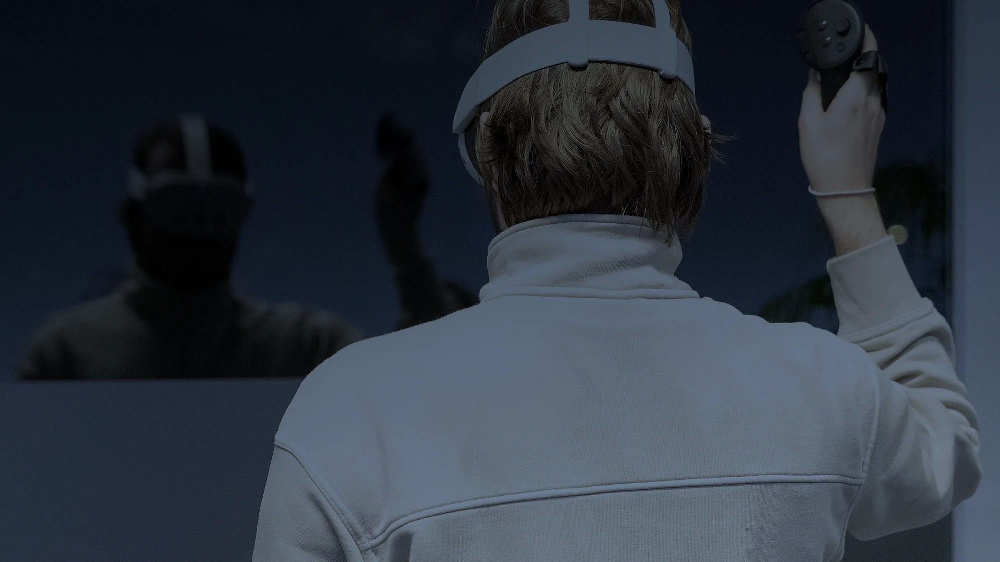
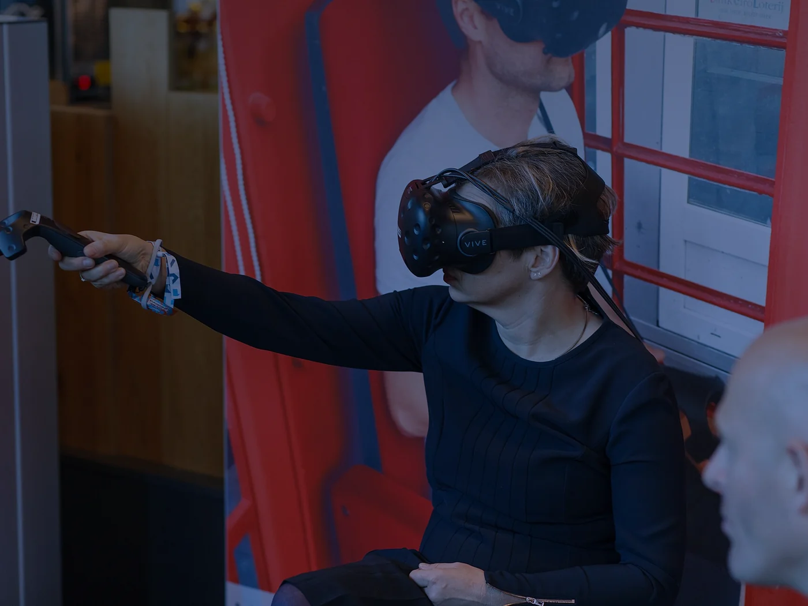
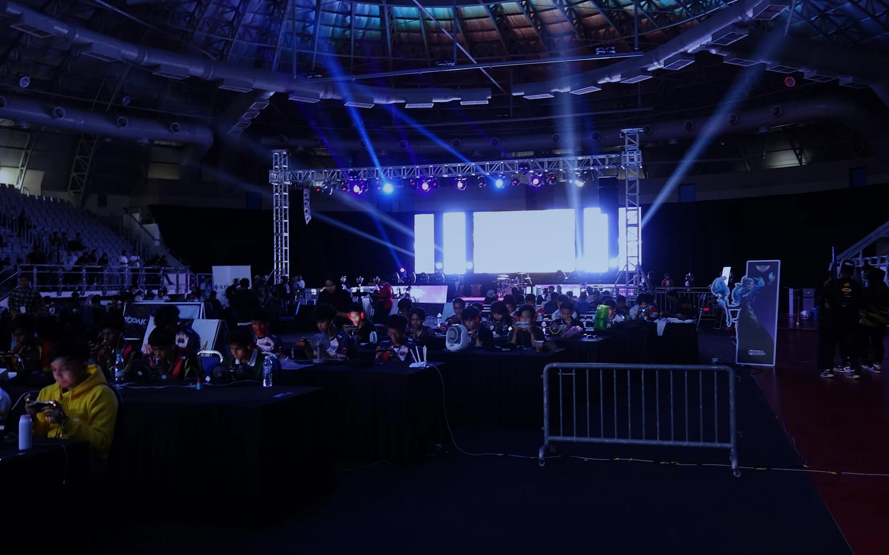
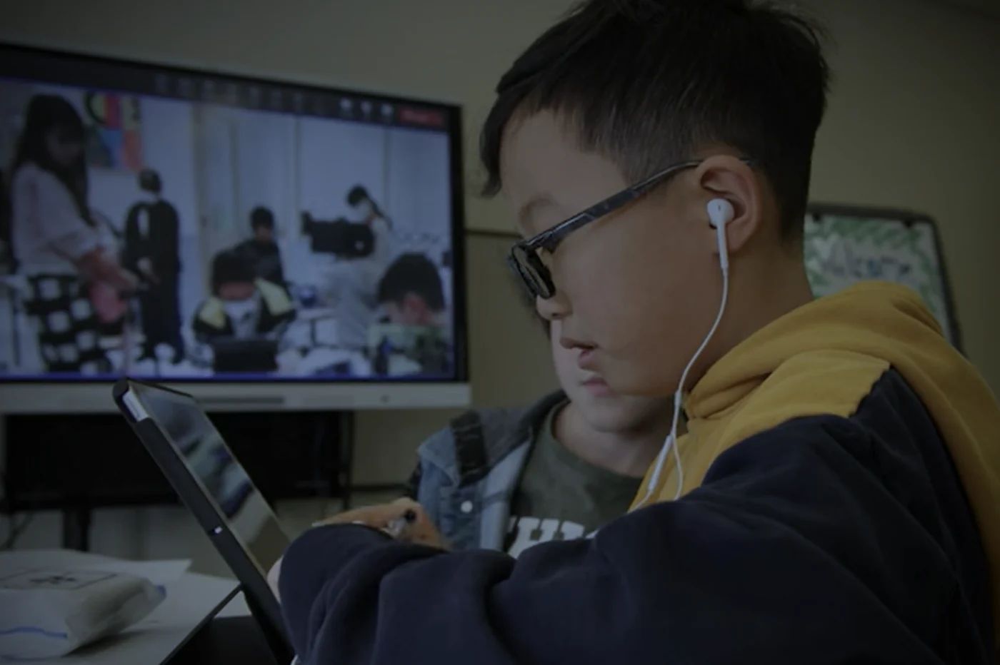

«Метавселенная = VR»
Нет. Многие социальные миры доступны с обычного экрана. Шлем усиливает погружение, но не создаёт экономику, идентичность и связи между платформами.

Интернет-технологии · лонгрид · 2026
Web 3.0, виртуальные миры и цифровые активы меняют гейм-индустрию. Разбираемся, где заканчивается ажиотаж и начинается новая экономика присутствия.
ЧитатьФото: InclusiveGameLab, CC BY-SA 4.0, Wikimedia Commons
Вместо вступления
Метавселенная — это не одна платформа, не VR-шлем и не обязательно блокчейн. Это набор технологий и договорённостей, которые позволяют виртуальным мирам быть устойчивыми, населёнными и связанными между собой.
Слово «метавселенная» успело побывать главным модным словом десятилетия и причиной разочарования — а теперь снова вернулось в повестку, уже без обещаний «второй жизни» к следующему вторнику. Пока инвесторы спорили о сроках, игры тихо превратились в самый массовый полигон пространственных миров, цифровых предметов и социальных экономик.
Именно поэтому самые интересные примеры сегодня находятся не в рекламных роликах, а в игровой индустрии. Здесь уже есть аватары, миры, сообщества, рынки и люди, готовые платить за цифровые вещи. Осталось понять, что из этого действительно работает, а что держится только на ажиотаже.
Для этого придётся разобраться в трёх вещах: из чего состоит метавселенная, почему игры стали её входной точкой и что происходит, когда к виртуальному предмету добавляют токен.
Определение
Первое, что стоит сделать, — перестать искать метавселенную в магазине электроники. Гарнитура — это только дверь. Вопрос в том, что находится за дверью и кто устанавливает там правила.
Международный союз электросвязи (МСЭ) описывает метавселенную как интегративную экосистему виртуальных миров, которая предлагает иммерсивный опыт и создаёт или изменяет ценность в экономической, экологической, социальной и культурной сферах 2. Важны оба слова: «экосистема» и «ценность». Речь не о конкретном приложении, а о среде, где действия пользователя что-то значат.
У такой среды обычно выделяют несколько признаков: ощущение присутствия, взаимодействие нескольких пользователей, непрерывность мира, возможность создавать контент и наличие социальной или экономической активности. Но это именно признаки, а не формальный список. Многопользовательская игра может быть постоянным миром, но работать на серверах одной компании. VR-приложение может быть иммерсивным, но не поддерживать взаимодействие с другими платформами.
Поэтому Roblox, Fortnite, Minecraft, VRChat, Decentraland и The Sandbox — это не «части одной метавселенной», а отдельные миры с разными моделями управления, аудиторией и технической архитектурой. Их можно рассматривать как примеры социальных или игровых виртуальных миров, но не как доказательство существования единого открытого пространства.

Нет. Многие социальные миры доступны с обычного экрана. Шлем усиливает погружение, но не создаёт экономику, идентичность и связи между платформами.
Нет. Блокчейн может фиксировать активы и транзакции, но не заменяет игровой сервер, правила мира и модерацию.
Нет. Пока это набор отдельных миров. Единого открытого «интернета миров» не существует — и именно совместимость остаётся главным вызовом.
Метавселенная начинается не с гарнитуры, а с совместимости: с возможности перенести не только аватар, но и правила, права и доверие.
Главный тезис исследования Всемирного экономического форума об интероперабельности 3
Анатомия
Метавселенная не появляется из одной технологии. Она собирается из нескольких слоёв — от интерфейса до экономики. Ни один из них не обязателен в абсолюте, но вместе они объясняют, почему одни миры ощущаются живыми, а другие — просто трёхмерным сайтом.
VR/AR/MR, смартфоны, ПК, контроллеры, камеры и пространственный звук. Датчики отслеживают положение головы и рук, а интерфейс превращает движения в действия. Шлем не обязателен: многие миры доступны с обычного экрана.
Что важно: доступность интерфейса определяет, кто вообще сможет войти в мир.
3D-движки, симуляция физики, аватары, анимация, цифровые двойники и инструменты пользовательского контента. Пользовательский контент превращает аудиторию в создателей и позволяет миру расти быстрее, чем команда разработчиков.
Что важно: качественный контент стоит дорого, а модерация пользовательского контента — ещё дороже.
ИИ генерирует объекты и диалоги, адаптирует сложность, персонализирует опыт, распознаёт речь и помогает модерировать сообщества. ИИ-агенты делают среду отзывчивее, но требуют прозрачности и контроля поведения.
Что важно: автоматизация не снимает ответственность за контент и поведение в мире.
Облака, граничные вычисления, игровые серверы, хранение и рендеринг. Крупные миры требуют синхронизации состояния, потоковой доставки ресурсов и предсказуемой задержки. Часть вычислений остаётся на устройстве, часть уходит в облако.
Что важно: «бесшовное присутствие» упирается не в скорость интернета, а в задержку и стоимость вычислений.
Широкополосные сети, 5G, идентичность, кибербезопасность и приватность. Пространственные устройства собирают новые типы данных — движение тела, взгляд, голос, окружение. Без доверия к этим данным иммерсивный опыт становится рискованным.
Что важно: приватность должна быть встроена в архитектуру, а не добавлена настройкой в конце.
Платежи, цифровые активы, блокчейн, стандарты и переносимость данных. Блокчейн полезен там, где независимые стороны нуждаются в проверяемом обмене. Но токен сам по себе не создаёт спрос, права на контент или совместимость.
Что важно: экономика — шестой слой, а не фундамент. Она обслуживает мир, а не заменяет его.
Блокчейн не является обязательным условием метавселенной. Он нужен там, где есть независимые стороны и потребность в проверяемом обмене. Если игра не нуждается в независимой проверке или переносе актива, централизованная база данных часто проще и дешевле.
Точка входа
Игры научили миллионы людей жить в цифровых мирах задолго до того, как слово «метавселенная» появилось в презентациях. Здесь уже были аватары, социальные связи, редкие предметы и рынки, на которых эти предметы перепродавали.
Гейм-индустрия объединяет разработку и издание игр, цифровые магазины, платформы, облачный гейминг, киберспорт и сообщества. Это массовая цифровая отрасль, в которой важны мобильные и сетевые сервисы, кроссплатформенность, пользовательский контент и регулярные обновления 7.
Web3 добавляет к этому вопрос о владении. Не «есть ли у предмета картинка», а «кто им распоряжается, можно ли его проверить и передать». Именно поэтому игры стали полигоном для токенов, NFT и смарт-контрактов — и именно поэтому здесь же появились самые громкие разочарования.

Рынок в цифрах
По оценке Newzoo, в 2025 году мировой игровой рынок должен составить около $188,8 млрд, а аудитория — около 3,6 млрд человек. ESA оценивает американский рынок иначе: 190,6 млн игроков и $59,3 млрд потребительских расходов в 2024 году. Это разные срезы, но оба показывают масштаб привычки.
Источники: Newzoo, ESA. Оценки не являются статистикой Web3-игр.
$51,3 млрд — игровой контент
$8,0 млрд — остальное
Структура расходов в США, 2024
Читать
Страницы, ссылки, каталоги. Пользователь потребляет контент, но почти не влияет на него.
Читать и создавать
Соцсети, платформы, пользовательский контент. Пользователь создаёт контент, но платформа владеет инфраструктурой и правилами.
Читать, создавать и владеть
Идея цифрового владения, проверяемых операций и переносимости. На практике — набор экспериментов, а не готовая система.
Игра — это метавселенная в миниатюре, только с одним владельцем. Web3 пытается изменить последнюю часть — и пока не всегда удачно.
Главный вопрос не в том, есть ли у предмета токен. Главный вопрос — останется ли у него ценность, когда закончится ажиотаж.
Тезис, который стоит держать в голове до конца лонгрида
Фото: O.sediqi93, CC0, Wikimedia Commons
Web3-игры
Модели P2E, P2O и криптоигры часто смешивают в один клубок. На деле это разные акценты: заработок, владение и технологическая основа. И у каждого — свои риски.
За игровые действия можно получать токены или предметы, у которых потенциально есть рыночная стоимость.
Риск: стимул заработать может вытеснить интерес к игре.
Акцент на распоряжении цифровым активом: пользователь может хранить, продавать или передавать предмет.
Риск: «владение» без технической поддержки и прав — только слово.
Широкое понятие для игр, использующих блокчейн, NFT, криптовалюты или смарт-контракты.
Риск: технология не гарантирует ни качества игры, ни устойчивой экономики.
Как это устроено
В типичной гибридной схеме сервер обслуживает матч и состояние мира, а блокчейн используется только для выбранных операций с активами. Так игра не записывает в сеть каждое действие игрока и не платит за это задержкой и комиссиями.
Схема автора. Блокчейн фиксирует выбранные операции, но не заменяет сервер и не делает все предметы переносимыми автоматически.
Схему можно прокрутить по горизонтали →
Анимация · 14 секунд
Короткая анимация показывает, где проходит граница между игровым сервером и блокчейном. Видео без звука — это схема, а не трейлер.
Токен не гарантирует право на авторское произведение, доступность серверов или перенос предмета в другую игру. Для переноса нужны техническая поддержка платформ, совместимый формат, права на использование и соответствие игровому балансу. Если игра не нуждается в независимой проверке или переносе актива, централизованная база данных часто проще и дешевле.
Исследования P2E-проектов показывают, что стимулы и динамика токенов влияют на вовлечённость: при падении доходности активность может сокращаться 10. Анализ Axie Infinity указывает на риск концентрации активов и зависимость участников от экономической модели 12. Это не делает все Web3-игры неустойчивыми, но подчёркивает: экономика должна поддерживать интересную игру, а не подменять её.
Есть ли спрос вне заработка? Будет ли игра интересна, если токен перестанет расти?
Что именно вы покупаете? Право на предмет, доступ к сервису или обещание будущей ценности?
Кто отвечает за перенос? Платформа, разработчик, сообщество — или никто?
Практика
Пионер P2E, который показал и силу, и хрупкость игровой экономики. Игроки зарабатывали на питомцах и боях, а рынок активов стал отдельным слоем игры. Исследования фиксируют зависимость от притока новых участников и концентрацию активов.
Чему учит: экономика не должна держаться на бесконечном притоке новых игроков.
Виртуальный город с землёй, событиями и сообществом. Показывает, как может работать цифровая собственность и самоуправление, но не доказывает, что массовый спрос уже появился.
Чему учит: цифровая земля имеет ценность только вместе с событиями и людьми.
Платформа для создателей и брендов: пользовательский контент, земля, игровые сценарии и коллаборации. Пример того, как метавселенная продаётся не как игра, а как пространство для создания опыта.
Чему учит: инструменты автора важнее, чем размер витрины.
Массовые социальные миры, которые выглядят как метавселенная, но не строятся вокруг токена. Они доказывают, что присутствие, пользовательский контент и экономика могут масштабироваться без блокчейна — и что Web3 не является обязательным пропуском.
Чему учит: сначала мир и сообщество, потом технология владения.
Nike .Swoosh — пример того, как бренд использует цифровые предметы и сообщество не вместо продукта, а как продолжение бренда. Это не игра, но логика та же: сначала аудитория и ценность, потом токен.
nike.com/swoosh ↗Аудио-интерлюдия · 48 секунд
Звук — половина погружения. Этот короткий ландшафт собран из низкого дрона, шумового «воздуха» и редких цифровых импульсов. Это не саундтрек к игре, а попытка передать ощущение среды, в которой вы находитесь не только глазами.
Наушники рекомендуются. Громкость лучше начать с минимума.
Атмосферный ландшафт: авторская генерация, 48 секунд.
Цена присутствия
Иммерсивные устройства собирают больше, чем кажется. Движение головы и тела, жесты, голос, направление взгляда, пространство вокруг пользователя и взаимодействие с объектами — всё это может стать телеметрией.
В отчёте NIST отмечается, что пространственные, телесные и поведенческие данные создают специфические для иммерсивных технологий риски; важными мерами становятся минимизация сбора, локальная обработка, контроль доступа и шифрование 5. Всемирный экономический форум также выделяет цифровую идентичность, приватность, безопасность и ответственность за поведение в виртуальных пространствах 4.
Походка, взгляд и микрожесты могут раскрывать больше, чем имя и электронная почта. Сбор «на всякий случай» превращает игру в наблюдение.
Потеря ключа или фишинг означает потерю актива. Пользователь часто не готов нести банковский уровень ответственности за игровой предмет.
Ошибка в коде может стоить дороже, чем баг в игре. Аудит, паузы и механизмы восстановления должны быть частью дизайна.
Пространственные миры сложнее модерировать: голос, жесты и социальные взаимодействия требуют новых правил и инструментов защиты несовершеннолетних.
Европейский регламент MiCA устанавливает требования к определённым криптоактивам и поставщикам услуг, но не означает, что любой игровой предмет автоматически подпадает под него 13. Для онлайн-сервисов также могут иметь значение правила платформенной ответственности, включая DSA 14.
Разработчикам стоит заранее учитывать безопасность кошельков, информирование игроков, защиту несовершеннолетних и правила разрешения споров. Регулирование зависит от юрисдикции и функций актива — универсальной «кнопки соответствия» нет.
Приватность по умолчанию
Приватность — не настройка в конце, а архитектурное решение в начале. В пространственном интерфейсе это особенно заметно.
Сценарии
Наиболее реалистичный сценарий — не одна метавселенная, а много миров, соединённых стандартами там, где это полезно и безопасно. Ниже — три сценария, а не прогноз.
Первый сценарий — интерфейсы без шлема: мобильный AR, веб-3D и доступность. Второй — открытые миры: переносимые аватары, идентичность и правила. Третий — экономика с осторожностью: токены только там, где они дают проверяемую ценность.
Они не исключают друг друга. Скорее всего, развитие пойдёт по всем трём направлениям одновременно — просто с разной скоростью.

Массовым входом станут не гарнитуры, а телефоны, браузеры и AR-очки. Побеждают сценарии, где пользователю не нужно покупать устройство за цену ноутбука, чтобы посмотреть виртуальную витрину или попасть на занятие.
Что это значит для игр: кроссплатформенность и мобильный доступ важнее графических рекордов.
Переносимые аватары, единая идентичность, понятные права на контент и общие стандарты безопасности. Это медленный путь, потому что он требует договориться не только о форматах, но и о власти, модерации и деньгах.
Что это значит для игр: открытые форматы и репутация становятся частью ценности платформы.
Экономика с осторожностью: цифровые активы там, где нужен проверяемый обмен между независимыми сторонами, а не ради красивого слова в презентации. Регулирование, аудит и устойчивый игровой дизайн становятся частью продукта.
Что это значит для игр: сначала интересный мир и доверие, потом токен.
Итоги
Шлем, токен или отдельная игра сами по себе не создают метавселенную. Нужны устойчивые миры, люди, экономика и связи между ними.
Здесь уже есть аватары, сообщества, предметы и рынки. Поэтому гейм-индустрия стала полигоном для Web3-экспериментов.
Токен может подтвердить операцию, но не создаёт спрос, права на контент, доступность сервера или переносимость.
Перенос аватара, идентичности и активов требует не только форматов, но и правил, безопасности и ответственности.
Устойчивая экономика опирается на интересный продукт и доверие игроков, а не на бесконечный приток новых участников.
Технология должна усиливать игровой опыт и доверие, а не подменять их финансовыми обещаниями.
Главный вывод лонгрида
Библиография
Исследования, экспертные материалы и практические кейсы. Все ссылки открываются в новой вкладке.
Техническая спецификация с определением метавселенной и рамкой понятий.
itu.int ↗ ИсследованиеОтчёт о рисках приватности и безопасности иммерсивных технологий.
doi.org ↗ ИсследованиеОбзор цифровой экономики, инфраструктуры и технологических трендов.
doi.org ↗ ИсследованиеАкадемический анализ моделей P2E, стимулов и устойчивости.
doi.org ↗ ИсследованиеИсследование устойчивости токеномики Web3-игр.
doi.org ↗ ИсследованиеКейс-анализ P2E-экономики Axie Infinity.
doi.org ↗ РегулированиеРегламент ЕС о рынках криптоактивов.
eur-lex.europa.eu ↗ РегулированиеDigital Services Act: правила ответственности онлайн-платформ.
eur-lex.europa.eu ↗ Экспертный материалОбзор технологий, определений и направлений развития метавселенной.
itu.int ↗ Экспертный материалПочему совместимость — это не только технологии, но и управление.
weforum.org ↗ Экспертный материалПриватность, безопасность и ответственность в виртуальных пространствах.
weforum.org ↗ Экспертный материалОценка мирового игрового рынка и аудитории.
newzoo.com ↗ Экспертный материалДанные об аудитории и привычках игроков в США.
theesa.com ↗ Экспертный материалКонтекст цифровой трансформации и Индустрии 4.0.
weforum.org ↗ Экспертный материалПромышленные сценарии и барьеры внедрения метавселенной.
weforum.org ↗ КейсИгровая вселенная с питомцами, боями и экономикой активов.
axieinfinity.com ↗ КейсВиртуальный город с землёй, событиями и сообществом.
decentraland.org ↗ КейсПлатформа пользовательского контента, игр и брендовых пространств.
sandbox.game ↗ КейсМассовая платформа социальных миров и пользовательского контента.
roblox.com ↗ КейсИгровой мир, который стал площадкой для событий и коллабораций.
fortnite.com ↗ КейсБрендовая цифровая платформа для коллекционных предметов и сообщества.
nike.com ↗Фотографии с Wikimedia Commons: InclusiveGameLab (CC BY-SA 4.0), Chongkian (CC BY-SA 4.0), NEXT Conference (CC BY 2.0), nakashi (CC BY-SA 2.0), O.sediqi93 (CC0), U.S. Department of Defense (общественное достояние). Изображения кадрированы и тонированы для оформления. Схемы, анимация и аудио созданы автором лонгрида.
Материал подготовлен по мотивам реферата «Основные направления развития современных интернет-технологий: метавселенные и гейм-индустрия» (2026).